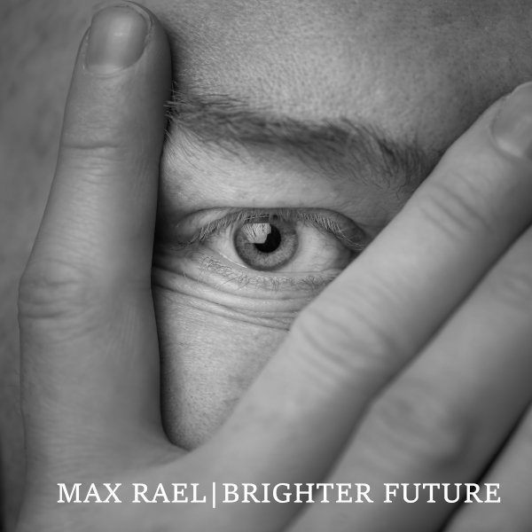

Brighter Future
Max Rael
- Release Date
- April 2025
- Label
- Liquid Len Recording Company
- Parent Album
- The Enemy Is Us (2025)
- Formats
- Digital Single (2-Track)
Official Music Video
Official visual accompaniment directed by Abigail Clarkson.
About
The debut solo single introducing Max Rael's 'futuretroist' electronic sound ahead of The Enemy Is Us. Driven by pulsing synth basslines, crisp electronic percussion, and deadpan spoken-word vocals, 'Brighter Future' interrogates modern disillusionment, avoidant coping mechanisms, and cynical defeatism—ultimately proposing a defiant 'Yes Future' stance.
Drawing catalyst inspiration from John Higgs's book The Future Starts Here, the lyric challenges the reflexive pessimism of contemporary culture while acknowledging the necessity of looking back, understanding our painful past, and learning to live with it rather than letting it dictate tomorrow.
The single is backed by the exclusive non-album B-side 'The People We Love Have Won (Persistence Is All)'.
Tracklist
- 01 Brighter Future (Single Mix) LEAD SINGLE
- 02 The People We Love Have Won (Persistence Is All) NON-ALBUM B-SIDE EXCLUSIVE B-SIDE
Lyrics
Realists are just pessimists with added confirmation bias Who tend to live shorter and more miserable lives It's a cognitive trap that avoids disappointment But it just ends up making you feel worse A bit like empty-headed positive thinking Or the fetishisation of being in the now With the blankness of soulless mindfulness It's a cognitive trap that avoids feeling bad, now But ultimately makes you worse What are we looking for? A brighter future What are we searching for? A brighter future How can we get to a brighter future? Things are bad now; how can we turn it around? A brighter future How do we go forwards? Stop repeating the same mistakes? Sometimes it involves looking back Understanding our painful past We can't ever undo it But we can learn to live with it And leave it back where it belongs And not let it ruin our present or our future What are we looking for? A brighter future What are we searching for? A brighter future How can we get to a brighter future? Things are bad now; how can we turn it around? Brighter future
Credits & Attribution
- Written by: Max Rael
- Produced, performed & mixed by: Max Rael
- Additional mixing: Caden Clarkson
- Mastered by: Pete Maher
- Video directed by: Abigail Clarkson
- Released by: Liquid Len Recording Company
- Publicity: Shameless Promotion PR
- Cover artwork & photographs: Filiz Photography (Copyright © 2025 FilizPhotographyUK — must not be altered or sold without photographer's permission)